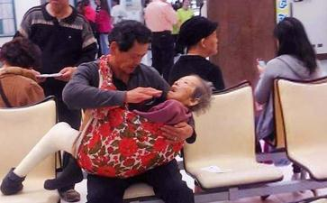

这是3月2日，网友“周雨朣”手机拍下的一张照片，以“把爱传出去”为题，发到社交网站“脸谱”后感动半个地球，打动美国、加拿大、澳大利亚、英国、新加坡、西班牙等地的无数网友。
3月5日据台湾《联合报》报道，2日发生在台南奇美医院的“孝子抱母”就诊的情深画面，令许多网友、读者动容，故事的主角是台南市调查站退休专员丁祖伋。
上个月，丁祖伋85岁母亲不慎摔断左腿，整只左腿打上石膏。3月2日，他带母亲去台湾台南市奇美医院复诊，母亲左脚无法弯曲，坐轮椅又怕碰撞，他才想出用婴儿包巾裹在胸前。
“看到丁副座抱妈妈上医院，一点都不意外！”台南市调查站人员看到“孝子抱母”照片，一眼就认出是老长官丁祖伋，“调查局上上下下都知道他是孝子”，为了尽孝，“不但放弃升官，甚至甘愿降调”。
昔日同仁说，61岁丁祖伋是独子，已婚育有一子，担任彰化县调查站副主任四年期间，每
由于调查局内规副主任最多6年，丁祖伋为就近照顾父母，自愿“降格”调台南市调查站专员。当时许多同事不解，“升官谁不挤破头”，再打听是他，反而不觉意外，“因为他就是这样的人”。在台南站上班后，丁祖伋每天中午都骑单车回家，陪父母吃饭，很少参与同事聚会。
“有人说久病无孝子，不过用在祖伋身上一定不适用”，一名调查员说，像祖伋这样的孝子很少了、很不简单，“社会需要这样的楷模”。“孝子抱母”求医的照片，这几天来已被网友分享26000 多次，且传到世界各地，有新加坡报纸报道，也有远在澳大利亚的网友留言说“被感动到哭了”。
有网友说“看到这张照片，让我们重新找回人性中光明且美好的一面”：“刚好正在照顾年迈的妈妈，看到照片十分感动”：“之前看新闻大部分都是儿子杀妈妈，现在看到这则新闻，原来还是有真孝子存在的”。
主人公丁祖伋的话：
“我不是孝子！”“母亲只有40多公斤，仅仅抱几分钟，很多人都做得来，谈不上
“我不是孝子！我不够孝顺，没有照顾好母亲，才让老人家摔伤。”丁祖伋语气间充满自责。5年前，丁祖伋提前退休，希望陪伴母亲回大陆探亲，没想到他因职务关系，须先管制三年，但母亲身体状况已不适合出行。
这成为丁祖伋人生最大的遗憾。“我连母亲想回大陆的心愿都无法达成，还配谈什么孝！”他说，退休前母亲身体状况就不好，“没想到老化这么快”。
“我是家里老大，与母亲
虽然高龄母亲因中风不能说话，但会透过眼神传达对儿子的感谢。
丁祖伋回应媒体
“感谢媒体和网友关心，我们不需要帮忙，社会资源留给有需要的人。之前的报道已给我和母亲造成困扰，也给他人造成不便，过意不去。接下来希望母亲能得到静养。”
奇美医院召开记者会，一度因躲避媒体采访不敢回老家住的丁祖伋现身，回答记者提问。
都市快报访谈对话丁祖伋：
都市快报：您的母亲曾希望回大陆探亲，很多网友非常关心，希望能帮上忙。
丁祖伋：很感谢你们的关心，但母亲现在的身体状况已不允许。大陆的亲人也不希望被曝光。对不起，这方面的信息我要保密。网友抬爱，我很愧疚。赞赏我担当不起，还有很多人，做得比我好得多，还有很多照片很感人。
都市快报：从照片看，您照顾母亲亲力亲为，有请护工吗？
丁祖伋：请的人肯定没有自己全心全意去照顾，怎么都会不放心。做饭要考虑营养，每天都要嘘寒问暖，表现出关心和热心。要关注母亲的点点滴滴，尤其是起居和身体，比如鼾声可能是某些疾病征兆，要会听，能及早发现。我照顾父母很长时间了，我琢磨看护人员的行为，翻资料，上网看
都市快报：您照顾父母而拒绝升官，当时怎么想？
丁祖伋：1994年，我不能说100%没有一点可惜，但和父母比较，这是必须要做的，能和家人
都市快报：您说自己不是孝子，那您怎么理解“孝顺”？
丁祖伋：孝顺，首先是顺，顺从。顺从父母意见，父母说得对的，就听从他们，不要故意去忤逆。说得不对，也不要去顶撞。其次才是孝，买东西、给钱，都是孝。我太太对她的母亲也是非常顺从的。确实有可能很多人很难做到，因为每个人都有主见和个性。
都市快报：您的孩子将来谈恋爱、结婚，您会以“顺”为标准吗？
丁祖伋：他还在读书，我会向他建议。基本品德很重要，每个人都希望找个将来对自己孝顺的儿媳妇吧。我跟儿子说过，
都市快报：您现在几乎都在家照顾母亲？
丁祖伋：退休后时间都花在母亲身上，衣食住行。如果不是非常重要的事，包括朋友联谊，我很少出门。在家处理琐碎的事情，男人做家事，杂乱无章，不敢说有流程，有效率。
记者手记：快给爸妈打电话
采写这条新闻时，我（记者）一直在愧疚中。
想起一条微博，“@翠苑派出所”前天说一个老人到派出所，掏出一个号码，是他儿子的，请警察同志帮忙联系。电话通了，没人接。老人说，要是联系上了，一定要告诉他。
观点
我们平常忙于工作，忙于活计，和亲人在一起的时间越来越少。
我们越来越多的
时不时给家里一个问候的电话、时常关心下家人的状况、多多和家人一起聊聊家常、有空多回家几趟，这是我们能做到，也应该做到的。